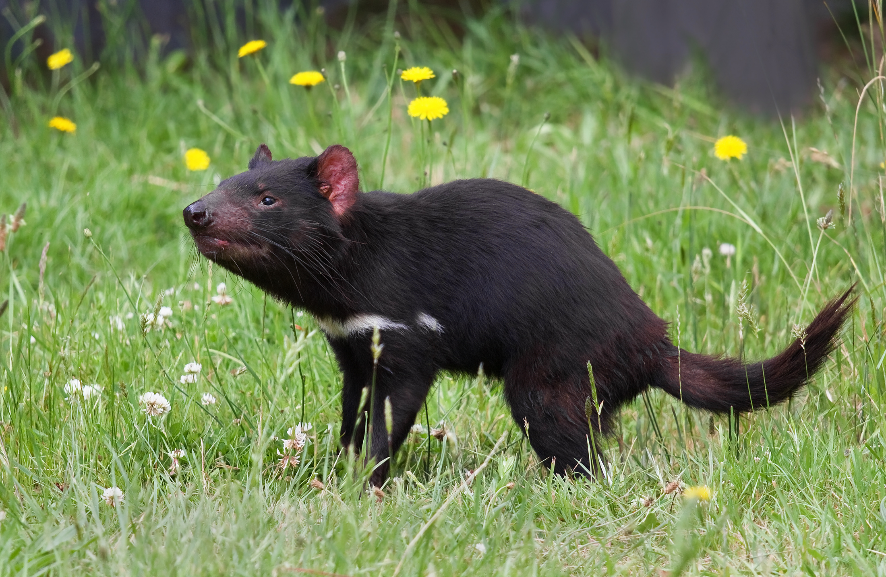

Tasmanian Devil

Between 1996 and 2008, the population of Tasmanian devils dropped
some 60% due a contagious cancer known as Devil Facial Tumour Disease.
It continues to decimate populations of the species, which only occurs
on the Australian island of Tasmania. There may only be 10,000 wild
individuals remaining. Captive breeding of uninfected individuals has
been instituted and efforts have been made to develop a vaccine for the
cancer, which is thought to have stemmed from mutated cells from a
single specimen.